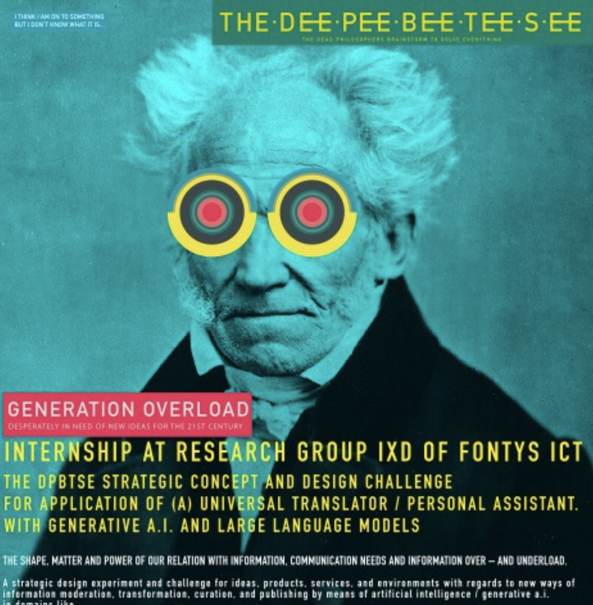
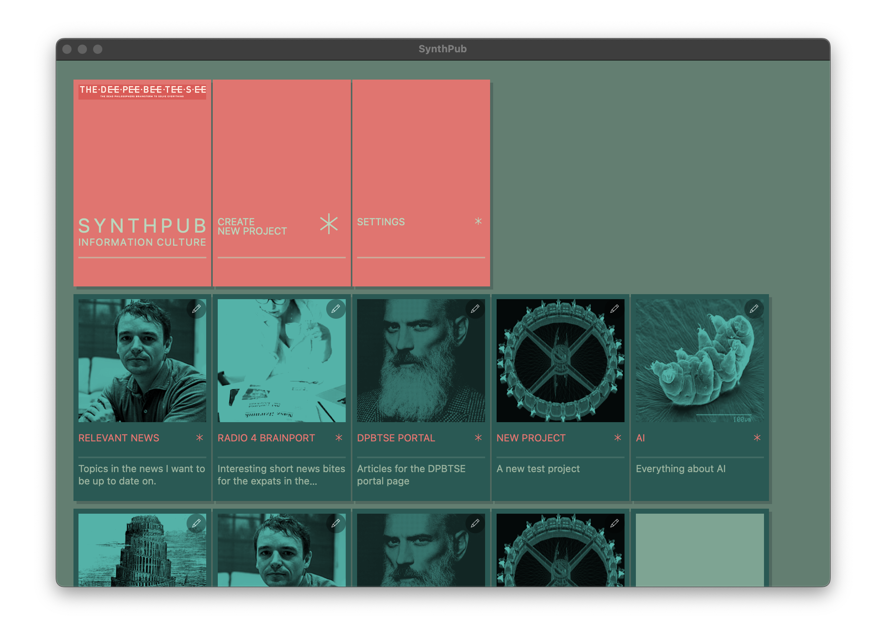

SynthPub
An AI Curated Digital Garden
SynthPub reimagines automated content publishing by treating information as a carefully tended digital garden rather than an endless stream of new content. In an age of information overload , this platform takes a thoughtful approach to content synthesis and curation, focusing on substance over information .
Download [soon]: **Windows** (v0.1.0) | **macOS** (v0.1.0) | **GitHub repository **
### Use Cases
This document outlines various real-world applications of SynthPub, demonstrating its versatility in different content curation and synthesis scenarios.

---
#### Academic Content Management: Keeping Course Material Current
**Scenario**: A lecturer needs to maintain up-to-date slides on rapidly evolving topics like LLMs, with lectures occurring only twice per year. With the field moving so quickly, it's challenging to keep track of what's still relevant and what has become outdated.
**How SynthPub Helps**: Tracks relevant innovations, filters out obsolete information, and generates concise overviews for easy updates. For example, it might note that new quantization techniques have been developed, or that certain architectural discussions are no longer current best practices.
**Input Sources**:
- RSS feeds from AI news blogs
- arXiv papers on LLMs
- Conference proceedings and technical blogs
**Output**:
- Synthesized article highlighting what's changed
- Suggestions for outdated content to remove
- Overview of current state-of-the-art approaches
---
#### Creative Writing Support: Novel Writing and World Building
**Scenario**: A novelist is deep into writing their fantasy epic, but keeping track of whether the protagonist's eyes were described as 'emerald' or 'forest' green in chapter 2 is becoming a headache. Not to mention remembering all the intricate details of their magical system across 15 chapters.
**How SynthPub Helps**: Monitors changes in chapter files and automatically maintains a living document of the story world. It catches inconsistencies like eye color changes or variations in how magic is described, helping maintain narrative coherence.
**Input Sources**:
- Text files on the novelist's hard drive
- Character sheets and world-building notes
**Output**:
- Detailed character profiles that update as the story evolves
- World-building documentation with cross-references
- Consistency reports highlighting potential contradictions
---
#### Community Information Management: Local Community Website
**Scenario**: A website master wants to keep their neighborhood informed about everything from the new playground construction to the latest town council decisions, without manually checking dozens of sources daily.
**How SynthPub Helps**: Creates a living overview of neighborhood affairs by monitoring various sources. For instance, it might combine information about planned roadworks with relevant city council decisions and local news coverage, creating a comprehensive update about infrastructure changes.
**Input Sources**:
- Local news outlets
- City council open data (especially about roadworks and planning)
- Community Facebook groups
- Municipal announcements
**Output**:
- Automated posts to a GitLab repository
- Static website updates with integrated information
- Weekly neighborhood digest
---
#### Project Management: Team Project Updates
**Scenario**: Every few weeks, a group of colleagues needs to catch up on each other's projects. Instead of everyone spending hours preparing presentations, they need an automated way to stay informed.
**How SynthPub Helps**: Creates digestible overviews of project activities without requiring manual status reports. It can show that Alice has been focusing on the frontend while Bob's commits indicate he's tackling database optimization, all without either of them having to write it up.
**Input Sources**:
- Git repository activity
- Project planning boards
- Team documentation
- Slack/Teams conversations
**Output**:
- "What's New" summaries for each team member
- Project progress visualizations
- Key discussion points for meetings
---
#### Content Creator Analysis: Thought Leader Content Curation
**Scenario**: A fan of Joscha Bach wants to stay up-to-date with his latest insights on the computational universe and consciousness model, but doesn't want to watch every 3-hour podcast for potentially just a few new ideas. Similarly, a Slavoj Žižek enthusiast wants to collect his best Soviet jokes without watching hundreds of hours of lectures.
**How SynthPub Helps**: Processes long-form content to extract specific types of information - whether that's Joscha's new metaphors for consciousness or Žižek's latest jokes. It can track how ideas evolve over time and identify truly new content versus familiar retellings.
**Input Sources**:
- YouTube video transcripts
- Podcast transcripts
- Twitter/X posts
- Academic papers and presentations
**Output**:
- Curated collection of unique insights
- Joke anthology with context
- Evolution of key ideas over time
- New vs. repeated content analysis
---
#### Personal News Curation: Customized News Experience
**Scenario**: An autistic person has very specific interests in certain news topics but finds traditional news overwhelming and poorly written. They want well-rounded stories about their interests, delivered in their preferred style and format.
**How SynthPub Helps**: Creates personalized news digests that match both content preferences and presentation style. It can transform dry news articles into engaging narratives, or combine multiple sources into a weekly podcast playlist for easy consumption.
**Input Sources**:
- Curated news RSS feeds
- Topic-specific sources
- Government data
- Scientific publications
**Output**:
- Personalized news summaries in preferred writing style
- Topical deep-dives
- Custom podcast playlists
- Weekly digests without overwhelming detail
---
## Getting Started
Visit our [GitHub repository](https://github.com/olafjanssen/synthpub) to:
- Explore the source code
- Set up your own instance
- Contribute to the project
- Learn more about the implementation
For developers, we provide comprehensive [API Documentation](api-docs.html) to help you integrate SynthPub into your workflow.
## AI-Human Collaboration
This project represents a true AI-human collaboration where AI tools are not just assistants but active participants in the development process. While human developers maintain final control and make critical decisions, the majority of the codebase and documentation is AI-generated and then refined through human review and modification.
## Part of The DPBTSE Initiative
SynthPub is developed as part of [The DPBTSE](https://dpbtse.com) (The Dead Philosophers Brainstorm To Solve Everything), a hybrid thinktank and creative studio-lab initiative at [Fontys ICT Innovation Lab](https://www.fontysictinnovationlab.nl/). The DPBTSE is an adventurous experiment that transcends traditional academic, artistic, and socio-economic boundaries by:
- Stimulating open-ended creativity and holistic thinking
- Integrating Arts, Science, and Philosophy
- Fostering collaboration between humans and AI
- Developing interdisciplinary approaches to 21st-century challenges
Through SynthPub, we embrace The DPBTSE's vision of exploring new intellectual and creative paradigms, particularly in how we handle and curate information in our digital age.
## License and Credits
This project is licensed under the MIT License. Feel free to use, modify, and distribute it according to the terms of the license.
Design inspired by [Better Motherfucking Website](http://bettermotherfuckingwebsite.com/), because sometimes the best design is just getting the fuck out of the way of your content.